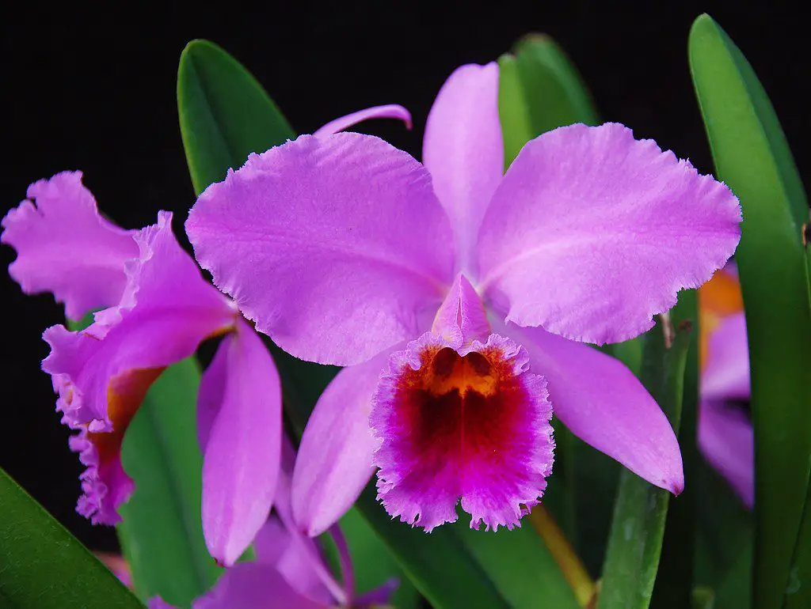

75.157 Especies observadas
Siendo el tercer país con mayor cantidad de especies registradas en el mundo, Colombia cuenta con una gran variedad de fauna y flora en todo su territorio, Posee con orgullo el título de ser la nación con la mayor cantidad de Orquídeas 4.270 , Aves 1.876 y Mariposas 3.642 , esto gracias a que cuenta con 98 diferentes tipos de ecosistemas generales entre ellos selvas tropicales, páramos, bosques húmedos , desiertos y ecositemas marinos.
Orquídea (Catleya trianae)

Según expertos, Colombia es el país con la mayor cantidad de orquídeas en el mundo, con un aproximado de 4.270 especies registradas de las cuales 1.572 solo existen en este territorio. En Boyacá tenemos un aproximado de 400 especies de Orquídeas y en Cundinamarca aproximadamante 1.003 ejemplares.
La chiguana (Comparettia macroplectron)

Explora sus regiones
Orquídea (Catleya trianae)

Boyacá
Boyacá es una de las regiones Colombianas con mayor presencia de especies endémicas, aportando (1036) de su total registrado (11.731), esto gracias a su variedad de ecosistemas lo cual genera un numero de especies significativamente diverso.
Ver mas
icono flecha
Orquídea (Catleya trianae)
Cundinamarca
En Cundinamarca se registran 15.480 especies, siendo el cuarto departamento con mas registros en Colombia, su variada topografía incluye Bosques, Sabanas , Páramos , Humedales, entre otros.
Ver mas
icono flecha